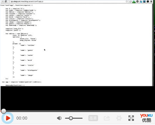

主要服务 Front-end development server
-
安装配置
快速搭建项目开发环境，不同域名的本地server，提供灵活的路由扩展方法和grunt插件套件。
-
自动化
通过我们提供的扩展路由，可实现自动化的打包构建，压缩，合并，优化，同时可处理如less，coffeejs，combine，css Import等动态解析功能。
-
调试
有一套完整的报错和调试机制，拥有自己的独立的日志系统。
-
扩展
灵活的插件和脚手架扩展机制，只要你会nodejs，就可以开发属于个性化的扩展插件。
视频演示 Front-end development server

论坛 Front-end development server
github issues
License Front-end development server
MIT license